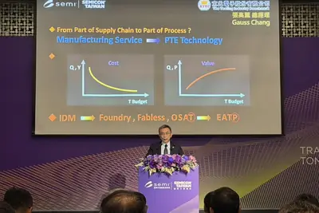
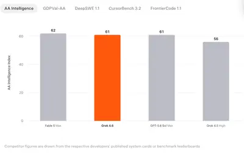
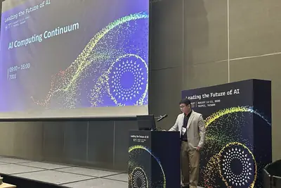
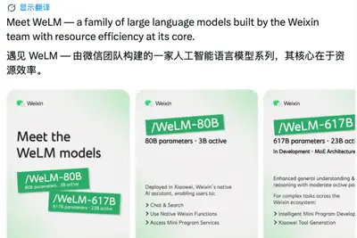
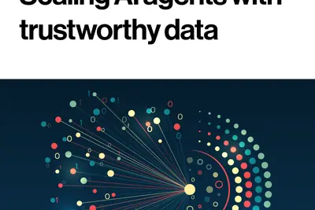
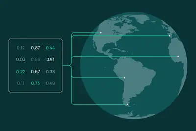
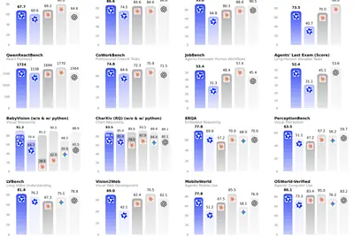
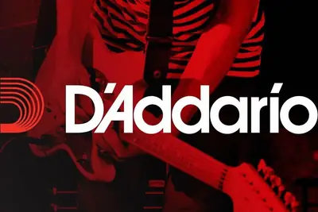

AI 每日新聞彙整
全部主題
其他
Every Pixel device announced at Made by Google 2026: 11 Pro Fold, Pixel Watch 5, and more
Google's latest Pixel lineup is a little pricier, has a new LED lighting feature, and debuts alongside a new finder tag.
- ZDNet AI Every Amazon Google Pixel 11 preorder deal - get up to $350 on an Amazon gift card, free
- ZDNet AI Every Pixel 11 deal at T-Mobile right now: Trade-in offers, free phones with new line, and more
- ZDNet AI How to preorder every new Google Pixel device - and the best deals I found
- ZDNet AI The Pixel Tag is Google's $29 AirTag alternative - with one big advantage
- TechCrunch AI Everything announced at Made by Google ’26: Pixel 11, Pixel Watch 5, Pixel Tag, and tons of Gemini features
- ZDNet AI The best Pixel 11 and Pixel 11 Pro cases of 2026: Expert recommended
- ZDNet AI AT&T will give you the new Google Pixel 11 Pro for free with trade-in - any year, any condition
- ZDNet AI Pixel Watch 5's strength training feature could replace my top lifting app - no phone needed
- ZDNet AI Google Pixel 11 Pro vs. Apple iPhone 17 Pro: Which Pro model should you buy?
- ZDNet AI Google Pixel 11 vs. Pixel 9: Why the Pixel 11 is actually worth upgrading
- ZDNet AI Google Pixel Watch 5 vs. Apple Watch Series 11: How Google competes against Apple
- The Verge AI Google’s Pixel Watch 5 dives deeper into AI and health
- Wired AI 4 New Camera Tricks on Google’s Latest Pixel 11 Smartphones
- ZDNet AI Every Pixel device announced at Made by Google 2026: 11 Pro Fold, Pixel Watch 5, and more
- ZDNet AI Google Pixel 11 vs Samsung Galaxy Z Fold 8: I compared the latest flagships - here's my take
- ZDNet AI I saw the Google Pixel 11 Pro Fold - and found 3 key reasons to buy it over Samsung
- ZDNet AI Google's new Pixel 11 makes a strong case for skipping the Pro models - here's why
- ZDNet AI This subtle Pixel 11 Pro feature reminds me of the golden days of Android phones
Twitch streamers can now opt out from training Amazon’s AI
Twitch users can now opt out of allowing their content to be used to train Amazon's generative AI models. Opting out means that "your streams, VODs, clips, stream chats, and pictures and text on your channel" won't be used in "future training" of an Amazon AI model "whose purpose

SpaceXAI推出Grok Bot！主打「幕僚長+專責Bot」AI協作，切入OpenAI與Anthropic戰場
SpaceXAI發表Grok Bot早期測試版，官方稱Bot有自己的雲端電腦，能登入既有帳號把事做完。

AI重塑半導體測試價值 京元電張高薰拋「四大整合」新模式
AI晶片價值與整合複雜度持續攀升，京元電總經理張高薰認為，半導體測試正在從「Part of the Supply Chain」變成「Part of the Process」，供應鏈也逐漸走向整合設備（Equipment）、配件（Accessory）、測試服務（Test...

- DIGITIMES AI重塑半導體測試價值 京元電張高薰拋「四大整合」新模式
- 科技新報 TechNews AI 顛覆半導體測試！京元電總經理張高薰：測試定位從供應鏈轉為製程核心
Launch HN: Discovered Materials (YC P26) – AI agents to discover new materials
Hey HN, we're Advaith and Akash from Discovered Materials ( https://discoveredmaterials.com/ ). We build AI agents that discover new materials for the semiconductor industry. GPUs today have a heat problem. Nvidia & AMD are almost doubling the TDP (Thermal Design Power) in every

Grok 4.6 scores 61 on the Artificial Analysis Intelligence Index
Article URL: https://artificialanalysis.ai/articles/grok-4-6-benchmarks-and-analysis Comments URL: https://news.ycombinator.com/item?id=49275385 Points: 304 # Comments: 307

- Hacker News (100+) Grok 4.6 scores 61 on the Artificial Analysis Intelligence Index
- IT之家 剑指 GPT-5.6 Sol，SpaceXAI 发布 Grok 4.6 模型
- Hacker News (100+) Grok 4.6
大客戶開始自研 AI 晶片，NVIDIA 反而加碼開放模型：Nemotron 如何擴大下一波 GPU 需求？
NVIDIA 在 8 月 11 日正式推出全新 Nemotron 3.5 Lightning。這是一款專為 AI 代理（Agent）設計的輕量化開放模型，企業不僅可以免費下載、使用與修改，也能直接在個人電腦的單張 GPU 上運行。 然而，這款主打速度與效率的 Lightning 模型，只是 NVIDIA 更大規模開放模型布局的一環。《The Information》披露，NVIDIA 內部正積極研發新一代 Nemotron 4 模型家族，希望讓其中最大的版本在性能上躋身全球頂尖開放模型之列。 NVIDIA 大舉投資開放模型，背後其中一項重要商業考量，是希
维基百科信息遭恶意篡改，谷歌搜索误显示 OpenAI CEO 奥尔特曼死讯
IT之家 8 月 13 日消息，当地时间周三凌晨，一些 X 和 Reddit 用户发现，在谷歌搜索 OpenAI CEO 萨姆 · 奥尔特曼的名字时，搜索结果显示他于当天去世。 几个小时后，谷歌承认该搜索结果存在错误。 谷歌在 X 上回应称：“感谢指出这一问题，目前该信息已经不再显示，而且这并非谷歌人为修改的结果。当有人恶意篡改公开信息来源时，可能会影响搜索结果中显示的信息。” 一些网友认为，这可能与维基百科遭到恶意篡改有关。维基百科将这种行为定义为“以故意扰乱或恶意的方式编辑页面”。作为一个免费网络百科全书，维基百科主要依靠志愿者编辑和更新页面内容。

AI伺服器液冷滲透率攀升 奇鋐估2027年達5成
AI下半年動能更強！機構件廠奇鋐指出，下半年包括ASIC與NVIDIA的Vera Rubin出貨放量，成長動能可期，除了NVIDIA的Vera Rubin系列，ASIC導入液冷散熱比重也將拉升，預估整體AI伺服器的液冷散熱滲透率，到2027年將一舉拉升至5...
- DIGITIMES AI伺服器液冷滲透率攀升 奇鋐估2027年達5成
AI算力跨站部署 全光網路繞過中繼交換、降低延遲與能耗
隨著AI運算規模持續擴張，大型資料中心面臨電力供給、空間與散熱的極限，單純建造更大規模的機房已經難以為繼，業界焦點開始轉向跨資料中心、跨地區的分散式架構。

- DIGITIMES AI算力跨站部署 全光網路繞過中繼交換、降低延遲與能耗
客戶抵押「未來AI算力」拿融資 黃仁勳將難題拋給金融業
AI基礎設施（AI基建）正從科技業者的資本支出，變成資本市場爭相布局的新資產。而AI算力軍備競賽延燒至今，科技大廠如微軟、Meta、OpenAI、亞馬遜等已無需獨自掏腰包買單。
- DIGITIMES 客戶抵押「未來AI算力」拿融資 黃仁勳將難題拋給金融業
AI榮景持續邁達特看旺至2027 預期「記憶體缺貨成常態」
AI算力需求持續強勁，佳世達旗下邁達特董事長曾文興表示，隨著國內企業及政府單位加快導入AI，大型金融、高階製造業也開始建立AI資料中心，持續帶動硬體、伺服器、儲存及網路建設需求，對2026年下半及2027年營運呈現樂觀看法。
- DIGITIMES AI榮景持續邁達特看旺至2027 預期「記憶體缺貨成常態」
三星晶片設計導入AI 負責人指幻覺、失控仍是硬傷
生成式AI浪潮席捲晶片產業，不過在效率躍進的同時，幻覺、失控與資安風險仍未完全解決。三星電子（Samsung Electronics）系統LSI事業部設計技術（DT）團隊負責人金永植（音譯）直言，軟體業已靠AI大幅精簡人力、創造可觀效益，但硬體業至今仍未受AI...
- DIGITIMES 三星晶片設計導入AI 負責人指幻覺、失控仍是硬傷
黃仁勳撫平循環融資隱憂 NVIDIA與6大金融機構豎起防護網
NVIDIA近期頻傳為客戶提供高額融資，讓市場產生人工智慧（AI）資產泡沫的疑慮。為化解危機，NVIDIA執行長黃仁勳宣布拉攏6大金融機構合作，透過引入外部資金與獨立審查機制，顯著降低NVIDIA自身財務風險部位。消息一出，信貸市場獲得安撫，出現初步紓解...
- DIGITIMES 黃仁勳撫平循環融資隱憂 NVIDIA與6大金融機構豎起防護網
科技巨頭賣 AI 願景高喊週休三日制，基層卻慘陷「每週 90 小時」爆肝地獄
科技業高層多年來不斷描繪一幅美好願景：人工智慧（AI）將大幅縮短人類的工作時間，甚至迎來「週休三日」（四天工作 […]
- 科技新報 TechNews 科技巨頭賣 AI 願景高喊週休三日制，基層卻慘陷「每週 90 小時」爆肝地獄
腾讯微信公布 WeLM 模型：80B 版已在 AI 助手小微上应用，617B 版正在开发
IT之家 8 月 13 日消息，腾讯微信团队在 X 平台公布了由微信团队打造的大语言模型 WeLM ，该模型以资源利用效率为核心。 根据官方公布的海报，WeLM 系列大语言模型目前已经明确的两个规格是： WeLM-80B：800 亿总参数，30 亿激活参数 WeLM-617B：6170 亿总参数，230 亿激活参数 其中，WeLM-80B 模型已部署于微信原生 AI 助手“小微”，支持以下功能： 聊天与搜索 使用微信原生功能 调用小程序服务 IT之家获悉，WeLM-671B 模型正在开发中，为混合专家模型（MoE）；在保持适度激活参数的前提下，显著提升通

Claude 打破平台壁垒：Chrome 侧边栏 AI 对话互通全平台历史记录
IT之家 8 月 13 日消息，Anthropic 今天（8 月 13 日）在 X 平台发布推文，宣布升级适用于谷歌 Chrome 浏览器的 Claude 扩展程序， 在侧边栏带来完整的 Claude Cowork 会话体验。 在体验方面，本次更新主要打破了浏览器和 Claude 其它平台的数据壁垒，浏览器内的任务和对话现可跨 Claude 桌面端、网页端及移动端无缝同步。IT之家附上相关视频演示如下： 侧边栏中发起的对话将保存至 Claude 历史记录，用户可在其他平台恢复会话。此外用户无需二次设置，可以直接在浏览器中使用账户已配置的 Agent Sk
AI 代理應用崛起將從端到雲帶動核心半導體元件需求
AI 代理是 AIGC 時代下最高層次的應用解決方案，隨著 LLM 的能力越強，AIGC 應用切入的領域越來越 […]
- 科技新報 TechNews AI 代理應用崛起將從端到雲帶動核心半導體元件需求
Some Claude users are mad that Anthropic’s new watermarks will catch them using it at their jobs, classes
Is Anthropic's new watermarking system a travesty? Some have taken to social media to complain that it is.
The web’s newest weapon against AI scrapers is a font
“ShieldFont” aims to poison AI training data without making pages unreadable for people.
- Ars Technica AI The web’s newest weapon against AI scrapers is a font
Terabytes of credentials leaked in massive supply-chain attack
The data was scraped and exfiltrated from 2,500 users of a compromised AI package.
- Ars Technica AI Terabytes of credentials leaked in massive supply-chain attack
【科技早餐】CoreWeave 算力幾乎售罄，IBM 簽 2.4 億美元 NVIDIA 推論協議
【科技早餐】今天精選 8 則國內外重要科技新聞。 ＊CoreWeave 算力幾乎售罄，客戶以長約搶 AI 運算資源 專門提供 GPU 雲端服務的 CoreWeave 表示，近期可供客戶使用的運算容量已接近售罄。截至 6 月底，公司營收積壓達到 1,042 億美元，高於前一季的 994 億美元，代表已簽約、預計在未來陸續認列的收入；其中超過一半的合約已開始提供服務。進入第 3 季後，CoreWeave 又取得超過 250 億美元的新客戶承諾，這部分尚未計入前述數字。客戶除大型 AI 模型業者，也已擴及 Meta、Anthropic 及 Caterpilla
- TechOrange 科技報橘 【科技早餐】CoreWeave 算力幾乎售罄，IBM 簽 2.4 億美元 NVIDIA 推論協議
The White House Is Going to Expand Its AI Policy
Open models may soon be added to an updated AI framework, sources tell WIRED, as the White House continues to grapple with how to regulate a technology it has tried not to regulate.
Lovable confirms new $13.3B valuation, raises another $400M
This new funding comes after Lovable hit $500 million in annualized run rate revenue in June, the startup told TechCrunch.

As AI safety concerns mount, three pioneers make the case for staying open
At Ai4, three of the world's most respected AI experts — Geoffrey Hinton, Fei-Fei Li, and Andrew Ng — debated regulation, open source access, and how America can compete as China advances in Asia.
Sparky Linux just restored 32-bit support - why that still matters
Got an old 32-bit computer lying around? Don't throw it away - Sparky Linux has decided not to give up on the aging architecture.
Mesh, Automattic’s CRM for everyone, comes to Android
Mesh, an AI-powered contacts app and relationship manager from Automattic, is now an Android app.
- TechCrunch AI Mesh, Automattic’s CRM for everyone, comes to Android
Scaling AI agents with trustworthy data
Business and technology leaders need no convincing that the time of agentic AI is here. Organizations are rapidly adopting agents, and few executives doubt the technology’s potential to transform work. But many organizations find that realizing the desired return on investment (R

- MIT Technology Review AI Scaling AI agents with trustworthy data
Why Stream ring-maker Sandbar says the future of AI wearables is voice
AI notetaking hardware has taken off over the past couple of years, with credit-card-sized devices, pendants, pins, and even transcribing earbuds all promising to capture your meetings and turn them into summaries and action items. Now, a whole wave of wearables — rings especiall

Introducing OlmoEarth embeddings: Custom embedding exports from OlmoEarth Studio for downstream analysis

阿里开放 Qwen3.8-2.4T-A95B 模型权重：2.4T MoE、激活 95B、原生 256K 上下文
IT之家 8 月 13 日消息，阿里云“魔搭 ModelScope 社区”公众号昨天（12 日）深夜宣布，阿里 Qwen 团队正式开放 Qwen3.8-2.4T-A95B 模型权重。 此次是 Qwen-Max 级别的模型首次开源权重：模型总参数为 2.4T，每个 Token 激活 95B 参数， 原生支持 262,144 Token 上下文，并可扩展至 1,010,000 Token 。 Qwen3.8 延续 Qwen3.5 的混合架构，重点提升 编程、办公、科研和长周期 Agent 任务 的端到端完成能力。官方云端版 Qwen3.8-Max 基于该开放

Guitar company D’Addario admits that AI music was used in a promotional video
After weeks of controversy and speculation, music company D'Addario has admitted that AI, specifically Suno, was used as part of a recent promotional video. For nearly two weeks, the company has denied the allegations, even as evidence piled up against it. It offered various expl

How a $250 million acquisition collapsed into allegations of fraud and forged signatures
Investors are still waiting for their share of the $250 million windfall, and VideoVerse co-founder Vinayak Shrivastav is now at the center of multiple legal cases.
Hackers are hunting for your private photos, FBI warns: 6 ways to avoid a sextortion nightmare
Hackers who steal compromising images of you from social media and personal accounts are selling them on the dark web. Here's how to protect yourself.
Booksellers suspect AI firms are buying and then destroying rare books
AI firms quietly bulk buying rare books face resistance from booksellers.
到 2030 年全国算力用电量将达 8000 亿度，届时 6 万亿度绿电奔涌入网
IT之家 8 月 12 日消息，据央视财经今天（12 日）报道，当前，一个万卡集群一天至少吞掉 20 万度电。据测算，到 2030 年全国算力用电量将达到 8000 亿千瓦时。人工智能的未来，不仅是“算”的比拼，更是“电”的竞赛。 报道指出，算力在狂奔，绿电在托底。截至 6 月底， 我国非化石能源发电装机容量 25.2 亿千瓦，占总装机容量比重的 62.4% ，我国新增用电需求 几乎全部由绿电满足 。 东数西算八大枢纽内，大型绿色算力集群绿电使用率持续攀升。内蒙古和林格尔、甘肃庆阳等地新建数据中心的绿电消费占比已超 80%，全国 172 个算力中心通过绿
Quoting Florian Herrengt
But then users start to report a weird bug. It's the 4th time your team has been trying to fix it. I mean... asking AI to fix it. Unfortunately, it seems like not even Fable can figure it out. You go talk to the person who worked on this feature. "So where does the data come from
- Simon Willison Quoting Florian Herrengt
谷歌 Pixel Buds Pro 2 耳机升级：主动降噪、同声传译功能均获增强
IT之家 8 月 12 日消息，今天（12 日）晚间随 Pixel 11 系列一同亮相的 Pixel Buds Pro 2 和 Pixel Buds 2a，将从今年秋季起加入一系列免手操作功能，让日常使用更加灵活。 谷歌新款耳机把升级重点从硬件转向了更智能的软件功能。其中最重要的升级是动态 ANC（主动降噪），针对的是耳机使用中一个很常见的问题：佩戴一段时间后，耳机与耳道之间的贴合程度可能发生变化。 Pixel Buds Pro 2 能够根据轻微的密封变化调整降噪效果，从而维持更强的噪声抑制能力。谷歌称，Pixel Buds Pro 2 现有 ANC 系
Inside the Data Bottleneck Slowing Visual and Physical AI
A survey of over 700 professionals examines how visual and physical AI teams build systems, why models fail, and where data work drives production. Download this free whitepaper now!
- IEEE Spectrum AI Inside the Data Bottleneck Slowing Visual and Physical AI
荣耀罗巍：Robot Phone 手机预定超过 40 万台
IT之家 8 月 12 日消息，在今晚的荣耀 Robot Phone 全球新品发布会上， 全球首款机器人手机 —— 荣耀 Robot Phone 正式发布 ，定价 9,999 元起。 12GB+512GB：9,999 元 16GB+1TB：12,999 元 京东 荣耀 Robot Phone 9999 元起 直达链接 IT之家注意到，荣耀首席影像工程师罗巍透露， Robot Phone 手机预定超过 40 万台 。他直言：“再不下手估计买不到了。” IT之家从荣耀发布会了解到，Robot Phone 是荣耀与顶级电影摄影机厂商 ARRI（阿莱）合作的首款